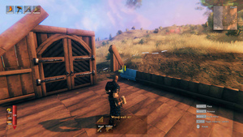
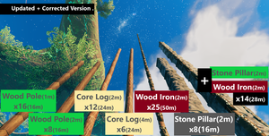
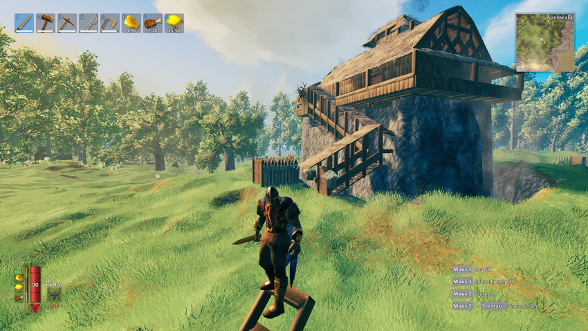
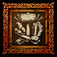

建材
本地离线版支持中英文站内搜索。带 ↗ 的链接需联网；中文采用用户词表，各页来源版本见页脚。


“使用丰富的建造界面，建造维京蜜酒大厅、住宅、城堡等。从商船到威武战舰，打造传奇船只，征服海洋，探索新大陆。[1]”
《英灵神殿》拥有丰富的建造系统，可设计满足各种战士需求的建筑。除了简陋住所和前哨，玩家还可以用建造界面打造庞大的基地、精巧的艺术作品、防御生物的工事，以及辅助生存的独特工具。
玩家从简单的木制构件起步，随后能解锁石材、金属等材料，建造更坚固的建筑。
基础
- 按 [1-8] 选择快捷栏中的工具锤
- 按鼠标右键打开建造菜单
- 按 [Q/E] 切换 建筑构件 分类
- 按鼠标左键选择 建筑构件，并放置
- 按鼠标中键移除 建筑构件
- 滚动鼠标滚轮旋转 建筑构件
- 按住 [Shift] 暂时关闭吸附
- 按住[Shift]，再按[鼠标中键]，即可选中当前指向的建筑构件。
放置某些建筑构件时，附近必须有相应的制作设施，包括：
- 工作台：放置开局和早期解锁的大多数建筑构件以及部分后期建筑构件时需要它。工作台从一开始就能建造，需要10份普通木材。
- 熔炉：放置大多数含金属的构件时需要它。建造熔炉需要铜，玩家能开采并冶炼铜矿后即可解锁。
- 切石机：放置石制构件时需要它，例如某些废弃建筑所用的石墙。建造切石机需要铁，玩家能收集并冶炼铁碎屑后即可解锁。
- 工匠台：建造某些制作设施时需要它；截至补丁0.142.6，这些设施位于已实装进度的末期。建造工匠台需要巨龙之泪，须击败第四位首领——龙冰霜龙母才能获得。
吸附建造
大多数构件可以相互吸附，方便快速建造。按住对应按键可以暂时关闭吸附：键鼠默认使用左Shift，手柄使用LT+LB。
结构稳定性
支撑不足时，构件会坍塌。可以用墙、横梁和立柱加固。
鼠标指向构件时，会显示从蓝色、绿色到红色的稳定性颜色。蓝色表示已达到该材料允许的最高稳定性，颜色越接近红色，稳定性越低。在完全变红的构件上继续添加构件，可能导致新构件坍塌并掉落建造材料，除非新构件对稳定性的要求更低。
单个构件的稳定性取决于其材料、所连接构件的稳定性，以及二者的相对位置。每增加一个构件，只能继承前一构件的一部分稳定性。
木材或石头制成的垂直立柱，最多可从地面向上延伸16米，再高就无法支撑同材料的构件。适用于木墙、半块木墙、石墙 1x1、石墙 2x1、石墙 4x2、圆形木桩 1m、圆形木桩 2m和石柱。
圆木原木制成的垂直立柱，最多可从地面向上延伸24米，再高就无法支撑同材料的构件。适用于圆形木桩 4m和圆形木桩 2m。
垂直的铁固木桩最多可从地面向上延伸50米，再高就无法支撑同材料的构件。
树木，包括玩家种植的树，在支撑计算中相当于“地面”，因此可以用来建造极高的建筑。


要保持高建筑稳定，应为最高处提供尽可能短、尽可能垂直的支撑路径，连接到地面。可以尽量抬高建筑下方的地形，让地板和墙达到100%稳定性，鼠标指向时显示蓝色。巨石在稳定性计算中也算地形，与其相交的构件视为接地。
腐朽
木制构件在雨中没有遮蔽、没有连接屋顶，或浸在水中时，会腐朽至剩余50%耐久度，修复前看起来也会腐烂。防御设施暴露在雨中不会腐朽。石材、黑大理石和水晶构件受潮或浸水时也不会腐朽。
如果担心下雨，可以先做好支撑和地基，再建屋顶，以保护需要数天或数周才能完成的建筑。
伤害
玩家、怪物和其他生物的攻击都能损伤建筑。防御设施在伤害接触它的生物时，自身也会受到少量损伤。
敌对生物会被所有光源（芜菁鬼灯除外）和制作设施吸引，并将其视为敌对目标；未攻击玩家时，会尝试破坏这些设施。
修复
可以用工具锤修复腐朽或受损的构件，无须消耗材料，但会消耗耐力。玩家必须位于相应制作设施的范围内，例如修复木制构件需要工作台，修复石制构件需要切石机。
废弃建筑
这些建筑是一类在世界中自然生成的地点。每座都由随机模板生成，因此大小、布局和材料可能差异很大。
废弃建筑包括废弃小屋、废塔和废弃农场等多种类型。
这些自然生成的废弃建筑可能包含存放该生物群系物品的箱子、怪物（通常为骷髅怪）、怪物生成点，以及标记该生物群系最近首领祭坛的指路符文。
在草原和黑森林中，还可能包含自然生成的蜂房；摧毁后会掉落蜂后，有时还会掉落蜂蜜。
接近废弃村落时应小心：有些已被尸鬼和尸鬼精英占据，会一见到玩家就攻击。这些尸鬼村庄通常有部分尖木围墙，几座建筑内能听到生物生成点的嗡嗡声，周围弥漫瘴气，屋内外都有尸鬼。村落几乎总有一座其他地方找不到的大型蜜酒大厅，也可能有持弓哨兵在塔楼上射击附近目标。
玩家基地与阻止生成
建造被视为“玩家基地”的设施后，会在周围一定范围内产生以下效果：
完整的玩家基地设施列表见玩家基地。
基地建造策略


- 在多个生态区域的交界处附近建造前哨，可获取多样资源，也能观察不同生物之间的领地争斗并捡拾散落战利品，但也可能很危险。
- 可以采用多种 防御方式 ，包括建造物体和改造地形：
- 生物无法挖穿地形，因此“地形墙”几乎无法被穿透。理想的防御可用锄头和石头、任意镐，或两者结合完成。注意，修改地形和放置物体一样，可能导致卡顿；按F2可查看已加载的“实例”数量。
- 站在地面上用锄头抬高脚下地形，可以快速竖起地形柱，站在上面射击下方的近战敌人。这样做需要附近有工作台，熟练后甚至能在战斗中完成。
- 大多数生物不会从边缘跳下，芬林和软泥怪除外。深坑（约3个“方块”）也基本安全，可射击靠近边缘的敌人。不过，没有屋顶时飞行生物仍可能从上方袭击。
- 大门可以被摧毁，但玩家进出基地时跳过的缺口无法被破坏。不过，这种做法可能不太方便。玩家还可通过冲刺并连续跳跃来攀爬陡峭的地形墙墙壁，尤其是朝接缝或墙角移动时更容易借力，而大多数生物做不到。
- 最对帧率影响较小的防御方法的方法是在几根地形柱上建造基地。这样可以减少地形修改产生的“实例”，同时无须理会在外面奔跑的敌人；若入口需要跳跃才能到达，效果尤佳。注意，将地形大致恢复原来的高度并不能消除帧率损失，除非游戏加入真正的“撤销地形修改”工具。
- 工作台和营火会在作用范围内阻止敌人生成，因此是很实用的防御工具。可将其藏在围墙外围，或放进浅坑并用几块地板遮盖，提升区域安全性。工作台还会防止掉落物品随时间消失。
- 门和大门可用来为板车制作可开关的桥。保护桥梁的另一种方法是在上方支架上悬挂大门，并将地板连接到门上，两侧留小缝。这样，大门被摧毁时，地板也会消失。
- 可以放置水中放置门阻挡敌人，它们无法攻击这些大门；打开后，船只仍可通过。
- 锄头的“平整地面”功能以玩家脚下的地形高度为目标；按住Shift再点击时，则以鼠标指向处的高度为目标。合理使用这一点可以节省大量石头和整地工作，因为该操作只消耗耐力与锄头耐久度。
- 还可以在坑底基地上方建造供敌人行走的“跳板”，并在上面放营火，让敌人自行烧死，再收集落到下方的战利品。
- 将护城河与高台前哨结合也是一种有趣的方案。这里展示了一个私人服务器的例子：
成就
 开荒者 • “建造一座房屋。”
开荒者 • “建造一座房屋。” 建筑师 • “建造一个村庄。”
建筑师 • “建造一个村庄。” 创造者 • “建造 500 个构件。”
创造者 • “建造 500 个构件。” 雄伟大厅 • “建造非常高的结构。”
雄伟大厅 • “建造非常高的结构。” 世界之巅 • “在高处建造。”
世界之巅 • “在高处建造。” 舒适才是王道 • “达到 20 级舒适度。”
舒适才是王道 • “达到 20 级舒适度。”
木匠 • “建造所有物品。”另见
参考资料
"Raise your own viking mead halls, houses, castles, and more with our powerful construction interface. From knarrs to imposing warships, build legendary vessels to conquer the seas and discover new lands.[1]"
Valheim features an extensive building system that can be utilized to design structures to meet the demands of any discriminating warrior. In addition to humble homes and outposts, players also use this building interface to make enormous bases, elaborate works of art, defenses against the Creatures of Valheim, and unique tools to aid in their survival.
Starting out with simple wooden building components, players will eventually gain access to the ability to create stronger structures with various materials, including stone and metal.
Basics
You can build using a Hammer within the working area of a Workbench.
- Press [1-8] to select the hammer in the hotbar slot
- Press [RMB] to open the build menu
- Press [Q/E] to switch Building Blocks category
- Press [LMB] to chose Building Blocks, and place it
- Press [Middle Mouse Button] to remove Building Blocks
- Scroll the mouse to rotate the Building Blocks
- Hold [Shift] to temporarily disable snapping
- Hold [Shift] then [Middle Mouse Button] to select Building Blocks you are looking at.
There are various crafting stations required to be nearby to place certain Building Blocks. These include the following:
- The Workbench, required to place most Building Blocks you have unlocked from the beginning or early on, and some late Building Blocks. The Workbench is immediately available and costs 10 ordinary wood to build.
- The Forge, required to place most building parts containing metals. The Forge requires copper to build, and becomes available once the player can mine and refine Copper Ore.
- The Stonecutter, required to place building parts created out of stone, such as the stone walls some abandoned buildings are made out of. The Stonecutter requires iron to build, and becomes available once the player can collect and refine Scrap Iron.
- The Artisan Table, required to build some crafting stations that as of Patch 0.142.6 are at the end of implemented progression. The Artisan Table requires Dragon Tears to build, which must be obtained by defeating the fourth boss, Moder the dragon.
Snap building
Most building components can snap to each other. This allows for quick and easy building, but can be temporarily disabled by holding the appropriate key or button. By default, this is L-Shift on mouse and keyboard, and LT+LB on controller.
Structural integrity
If there is not enough support, the building pieces will fall down. You may reinforce the building with walls, beams, and poles.
When you move the cursor to the building piece, it shows a color range from blue, to green, to red. Blue indicates that the part is as stable as it can be, as dictated by its material. The closer to red on the spectrum, the less stable the part. Attempting to place additional pieces onto one that is fully red may result in the new part breaking off and dropping the resources used to construct it unless the new part has lower stability requirements.
The stability of an individual building piece is determined by its material, the stability of the piece it's anchored to and its position relative to it, each additional piece inheriting a fraction of the previous piece's stability.
A directly vertical pole of Wood or Stone can rise 16 meters off the ground before it cannot support another piece of the same material above it. This is true for Wood Wall, Wood Wall Half, Stone Wall 1x1, Stone Wall 2x1, Stone Wall 4x2, Wood Pole 1 m, Wood Pole 2 m, Stone Pillar.
A directly vertical pole of Corewood Logs can rise 24 meters off the ground before it cannot support another piece of the same material above it. This is true for Log Pole 4 m and Log Pole 2 m.
A directly vertical Wood Iron Pole can rise up to 50 meters off the ground before it cannot support another piece of the same material above it.
Trees, including those planted by the player, will effectively function as "the ground" for support purposes, allowing for extremely high construction.
In order to keep tall structures stable, the tallest point should be reinforced by supports that create the shortest and most vertical path possible down to the ground. It is worth considering raising the terrain as much as possible below a structure, such that the floor and walls are 100% stable (highlighted in blue when moused over). Boulders are also considered terrain when calculating stability, so parts that intersect them are considered grounded.
Decay
If wooden building sections are not covered during rain, are not linked to a roof, or are submerged in water, they will decay to a maximum of 50% durability and will seem rotting until fixed. When exposed to rain, defensive structures do not rot decay. Stone, black marble, and crystal structures will not decay when wet or submerged.
Building the desired structure's roof first, with the appropriate supports and foundation in place, will aid with constructions lasting days or weeks if rain is a worry.
Damage
Player, monster, and creature attacks can all damage structures. Defensive structures will also receive minor damage while causing harm to creatures that come into contact with them.
Aggressive creatures are drawn to and hostile toward all light sources (excluding Jack-o-turnips) and crafting stations, and will try to break them if not attacking a player.
Repair
You can repair building parts that seem to be decaying or damaged with a Hammer. This does not cost any resources, but does consume stamina. The player must be in range of a crafting station that corresponds to the part being repaired, e.g. a Workbench when repairing a wooden part, or a Stonecutter for a stone part.
Abandoned buildings
These structures are a type of point of interest that can be found to naturally occur in the world. The size, layout, and materials these structures are made of can vary greatly as each is generated from random templates.
There are different types of abandoned structures such as Abandoned Cabins, Abandoned Towers, Abandoned Farms just to name a few.
These abandoned and generated structures can contain things such as chests with items specific to the biome, monsters (usually Skeletons), monster spawners, and Vegvisirs to mark the nearest boss altar for that biome.
In the Meadows/Black Forest biome, they can also contain naturally spawning Beehives, which will drop a Queen Bee and sometimes Honey when destroyed.
Players should approach abandoned villages with caution since some villages have been reoccupied by Draugr and Draugr Elite who will attack the player on sight. These Draugr Villages can be identified by partial walls of sharp logs and the buzzing of the spawners inside several of the buildings as well as a general miasma and the presence of Draugr both inside and outside the structures. They almost always have a large Mead Hall building that cannot be found anywhere else. There may also be a sentry in a tower armed with a bow who will snipe anything that comes near.
Player base and blocking spawning
Building certain structures considered to be 'player base' will have the following effects in a radius around them:
- Prevent creature spawning
- Prevent items dropped on the ground from despawning after 1 hour (unless submerged)
- Enable player base events to occur
For a full list of player base structures, see player base.
Base building strategies
- Building your outposts in close proximity to several biome borders grants access to varied resources and allows you to observe the territorial in-fighting of different creatures (complete with loot strewn across the terrain), but can also be dangerous.
- Many types of defenses are possible, both in the form of built objects and altered terrain:
- Creatures cannot dig through terrain, making "terrain walls" effectively impenetrable to them. Thus the perfect defense is built either with a hoe and a pile of rocks, any pickaxe or ideally a combination of the two. Be warned that terrain alterations may cause stutter just as placing objects does (press F2 to check the number of "instances" loaded).
- A hoe can be used to raise terrain while you're standing on it, allowing you to quickly erect a pillar to stand on and shoot melee enemies below. Beware that you need a workbench nearby to do this. With practice this is possible during combat.
- Most creatures never jump down from ledges (Fenring and Blobs are exceptions). A deep pit (around 3 "blocks") is also largely safe, and you can shoot enemies coming close to the ledge. Flying creatures may attack from above if you don't build a roof, however.
- Gates can be destroyed, but gaps the player jumps over when entering or exiting the base cannot. This trick can be inconvenient, however. Also note that you can scale steep terrain walls by sprinting and jump-spamming, especially when moving towards a crease (corner) for better traction, while most creatures cannot.
- The most FPS-efficient method of defense is to build on a few terrain pillars. This minimizes terrain alteration "instances" yet allows you to ignore enemies running around outside, especially if the base entrance requires a quick hop to get on. Note that returning terrain to its roughly native height doesn't remove the FPS hit (unless a true "undo terrain changes" tool is added to the game).
- Workbenches (and campfires) disallow enemy spawns in their radius, making them surprisingly useful defensive tools. You can hide these in the outer perimeter of your walls or in small pits covered with a few floor tiles to make an area safer. Workbenches also stop dropped items from de-spawning over time, however.
- Doors and gates can be used to create a toggle-able bridge for carts. Another option to defend your bridge is to hang a gate from a support above it and attach the floor piece to the gate with small gaps on the sides, causing the floor to disappear if the gate is destroyed.
- You can place gates in the water to block enemies, who will be unable to attack the gates, yet allow boats to pass when opened.
- The "Level Ground" option for the hoe uses the terrain height directly underneath you as the target altitude, though if you hold Shift while clicking it'll use the altitude of the terrain you're pointing at instead. Using this knowledge well may save you a lot of stone and work while landscaping as it only expends stamina and hoe durability.
- You can also build a "gangplank" for enemies to walk on, above your pit base, and put a campfire on it so they'll kill themselves, then catch the loot when it drops down.
- Combining a moat with a plateau-based outpost is an interesting option. An example from a private server is shown here:
Achievements
The Homesteader • "Build a house."The Architect • "Build a village."The Builder • "Build 500 pieces."Mighty Halls • "Raise a very tall structure."Top of the World • "Build something very high up."Comfort is King • "Reach a comfort level of 20."See also
References
| Crafting |
| ||||||||||||||||||
|---|---|---|---|---|---|---|---|---|---|---|---|---|---|---|---|---|---|---|---|
| Structural |
| ||||||||||||||||||
| Light sources |
| ||||||||||||||||||
| Furniture |
| ||||||||||||||||||
| Transport |
| ||||||||||||||||||
| Defense | |||||||||||||||||||
| Siege | |||||||||||||||||||